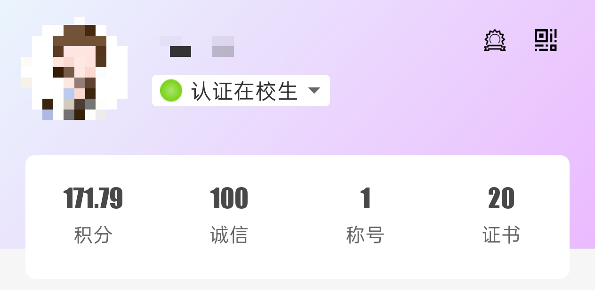

大一除了适应课程和宿舍生活，还要面对一个「必答题」：到底要不要加社团？加几个？选学生会还是兴趣社？本篇把社团/学生组织的选择逻辑、学分规则和实际加入流程一次性整理清楚。建议配合《校园卡》《公共浴室》《图书馆》等指南一起阅读，更快摸清校园生活全貌。
声明：本指南为吧主个人经验总结 + 官方名单整理，仅供新生参考，不代表学校官方立场。如有不准确之处，欢迎在评论区纠正、补充。
一、吧主建议：大一只加一个社团/组织就够了
不管是学生组织还是社团，都有常态化日常工作、固定任务、活动值班、文案整理等事务，会持续占用课余精力。大一本身是大学里最忙碌、最需要适应的阶段：要适应全新的校园节奏、跟上课程进度、处理宿舍集体生活，同时还要参加学校频繁安排的新生教育、讲座和班会。
如果社团/组织报太多，大一基本没有放松时间，极易疲惫内耗。
1. 通用晋升机制
全校学生组织和社团的晋升路径大致相同：
- 大一：普通干事/成员，以执行工作、参与活动为主；
- 大二：留任中层，可担任部长等职务；
- 大三：留任高层，可担任主席、社长、团长等负责人。
二、为什么大部分人都会加入社团/组织？
很多新生会疑惑：既然累、还要干活，为什么还要参加？主要是两个现实原因：
1. 到梦空间学分（直接关联毕业）
我校第二课堂学分统一在「到梦空间」APP 记录、认定，报名参加活动可获得学分，学分不达标无法正常毕业。

到梦空间学分各模块要求如下：
| 模块 | 分值 | 主要内容 |
|---|---|---|
| 思想成长 | 30 分 | 青春大讲堂、道德讲堂、国奖沙龙、主题班会、团校/党校培训、青马工程、先进班团支部/班集体、校/系文明宿舍、思想成长类阅读与比赛、奖学金及先进集体荣誉等 |
| 志愿公益 | 30 分 | 日常志愿服务活动、义务献血、志愿公益荣誉称号、西部计划志愿者、志愿公益类比赛、校园秩序与环境美化、扶贫助困、社区治理、志愿劳动小时等 |
| 实践实习 | 30 分 | 暑期“三下乡”社会实践、境内外交流学习、见习、专业实习、行业实习、日常实践活动等 |
| 文体活动 / 创新创业 / 工作履历 / 技能特长 | 60 分 | 文体活动类、创新创业类、工作履历类、技能特长类 |
| 合计 | 150 分 | — |
注：具体分值与认定规则以学校最新公告为准。
小提示：虽然大三学校会统一放出大量补录活动给学分不足的同学兜底补分，但属于被动补救，体验差、非常仓促。尽早、慢慢攒够学分，是最省心的选择。加入社团/学生组织的优势之一，就是内部活动优先对内招募、名额更多，更容易稳定攒够到梦空间学分。
2. 期末综测加分
正常参与社团、组织工作，每年期末综测可获得少量加分，对评奖评优有一定帮助。
三、吧主选岗真心话
如果你没有明确意愿冲学生会干部、走学生工作路线：
不建议报纯干活、事务密集的功能性学生组织。
对大多数新生来说，最优选择是挑一个自己真正感兴趣的社团。既能完成到梦空间学分、拿综测加分，又能结识同好、丰富课余生活。
（所有社团都有基础工作，不存在纯养老、完全不用做事的社团，请理性看待。）
四、院系学生组织职能介绍
校内各院系一般标配以下六类学生组织，分工清晰：
- 院系学生会：负责各类文体活动、学生日常事务、活动统筹执行；
- 院系团总支：主管团务工作，包括团课、团日活动、团员信息管理、青年思想教育等；
- 院系自律委员会：负责纪律监督、教室考勤、宿舍卫生检查、晚查寝等常规检查；
- 院系青年志愿者协会：统筹院系志愿活动，统计、上报志愿时长；
- 院系新媒体：运营院系官方宣传平台，负责活动拍照、推文撰写、日常宣传；
- 院系易班工作站：运营易班平台，偏宣传、打卡、活跃度任务，常需督促班级完成各类截图打卡。
补充：校级对应组织职能和院系基本一致，区别是校级组织可对下级院系组织下发工作任务、统筹全校工作。
五、社团 & 组织招新、加入方式
1. 社团
所有社团均由对应院系开办，面向全校所有学生开放报名。宣传招新分为两种渠道：
- 院内针对性宣传；
- 统一参加开学「百团大战」集中招新。
2. 校级学生组织
只在百团大战统一招新，无单独院内宣讲、不私下招人。
3. 院系学生组织
仅限本院系学生报名，仅在本院系内部宣传，不参与百团大战。
4. 通用报名流程
- 招新现场填写纸质报名表；
- 等待面试通知；
- 参加面试；
- 公示录取结果。
吧务组收集部分学长学姐对社团/组织的真实反馈，数据不全、主观性强，仅供参考
查看评分说明：以上评分由吧务组根据学长学姐反馈整理，数据来源有限且主观性较强，建议结合自身兴趣综合判断，仅供参考。
六、全校官方组织 + 社团完整名录
1. 校团委直属九大校级学生组织
- 校学生会
- 基层团务管理中心
- 青年志愿者协会
- 新青年媒体中心（唐师新青年）
- 大学生艺术团
- 科创赛事服务中心
- 社团管理中心（管辖全校所有注册社团）
- 第二课堂管理中心
- 国旗护卫队
2. 各院系常设学生组织
- 院系学生会
- 院系团总支
- 院系自律委员会
- 院系青年志愿者协会
- 院系新媒体
- 院系易班工作站
3. 全校正式注册社团（官方分类）
以下名单按学校官方分类整理，加入后一般可获得到梦空间学分认定：
文化体育类
- 园艺社
- 心语秘书社
- 心音朗诵社
- 风赏书法协会
- DIY 创意手工协会
- 体育竞技社
- 唐小狮新青年法治社
- 金口才辩论与演讲协会
- 心侣剧社
- 大学生金口才协会
- 灵动风域社团
- 心韵古琴社
- 文成纸艺社
- 风韵陶笛社
- 大学生摄影协会
- 野树文学社
- 观德射艺
- 齐跃剧社
- 心画书法社
- 天意吉他社
- 卓越旅游爱好者协会
- 大学生评剧团
- 心泉文学社
- 茶艺社
- 弈亭棋社
- 爱言外语演说社
- 畅想演艺协会
- 唐山师范学院英语协会
- 汉江秋月文化社
- 院戏曲文化艺术协会
- 工业文化研究社
志愿公益类
- 爱传承安全教育宣讲协会
- 动植物保护协会
- 学生读者协会
- 默言手语社
- 环境保护协会
- 聚光爱心协会
思想政治类
- 政治研究协会
- 青春宣讲团
- 抗震精神研究社
- 冀东红色文化研究会
- 延安精神研究社
- 大学生校史文化研究学会
- 大学生青春倡廉社
- 大钊精神研究社
- 中国特色社会主义理论社团
- 西柏坡精神研究社
学术科技类
- 燎原科技社
- 人文规划学社
- GIS 协会
- 博云地理测量协会
- 星空爱好者协会
- 瀚海自然协会
创新创业类
- 计算机协会
- 创新竞赛俱乐部
- 奇迹视界工作室
提醒：学校还有一部分学生自行组织的“民办社团”，没有到梦空间加分资格，但日常工作也更少，更多是有共同爱好的同学一起玩，比如动漫社（纳新群号：1064414084）。
祝大家选到适合自己的社团组织！
唐山师范学院吧务组
2026年8月4日